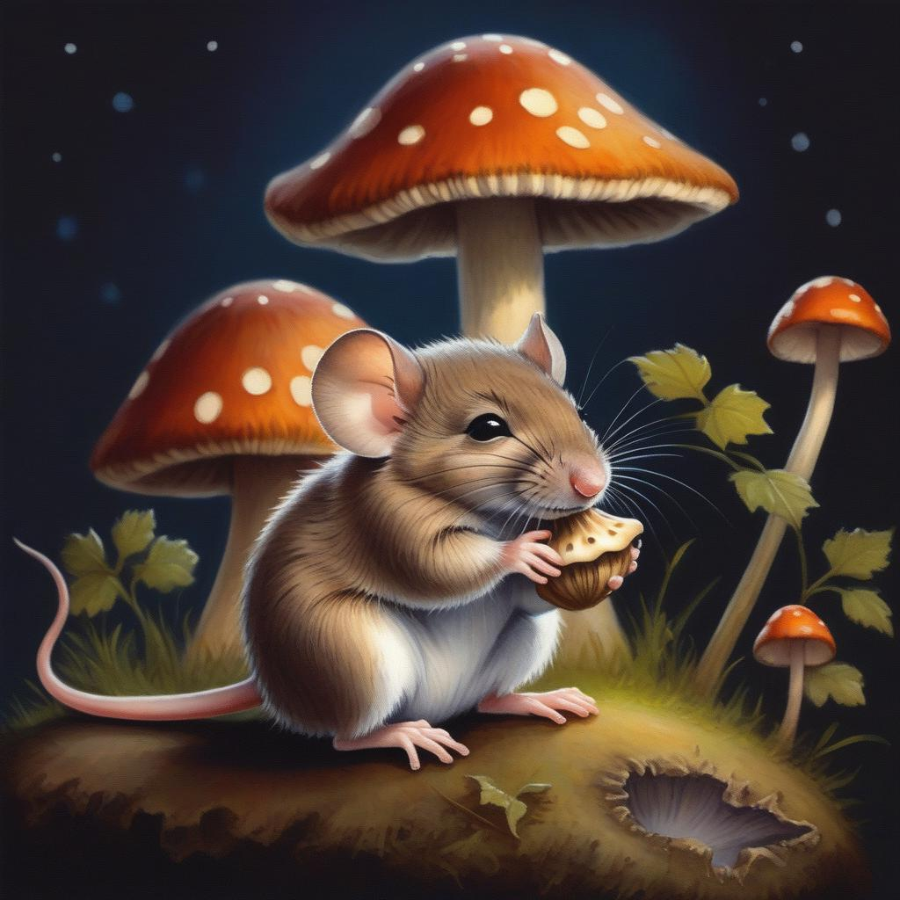

Charles located a small grove of mushrooms under an oak tree; it seemed ideal because there were numerous acorns embedded in the mossy terrain. He plucked one out and nibbled on it for supper. A shallow depression remained in the ground where the acorn had been thinking about becoming a tree. "If it rains, the mushrooms will help me stay dry," he thought to himself. But even as he thought about the rain, the breeze was clearing the clouds from the sky.